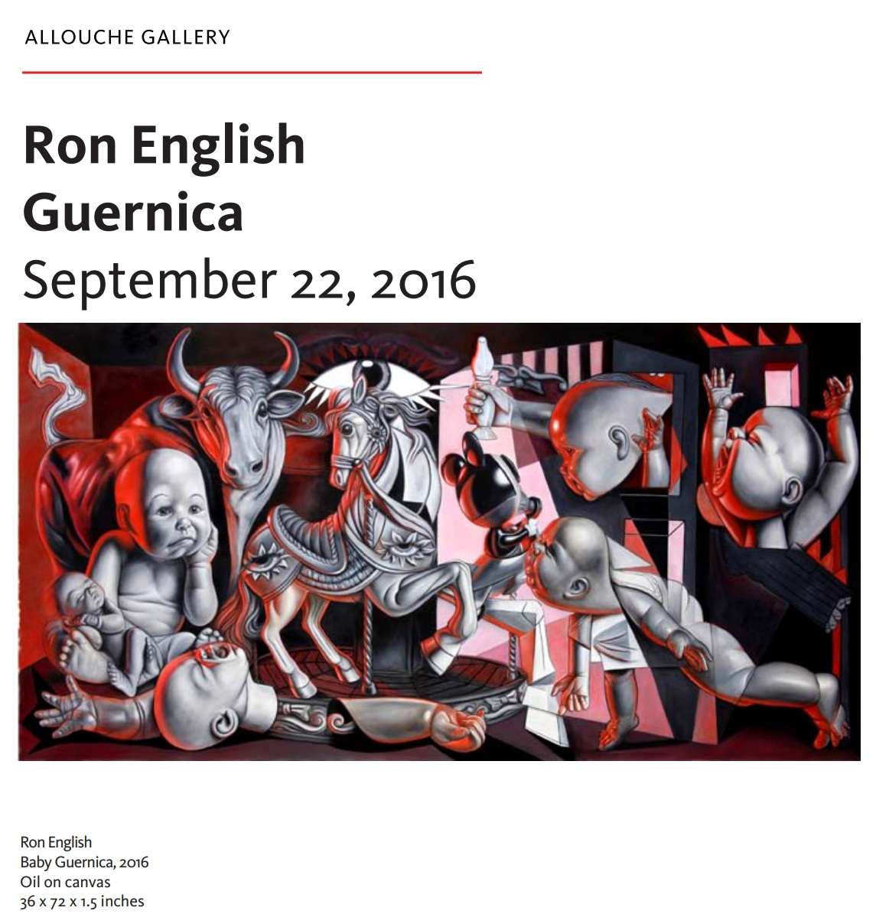
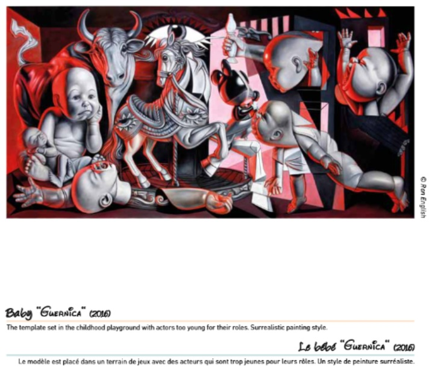
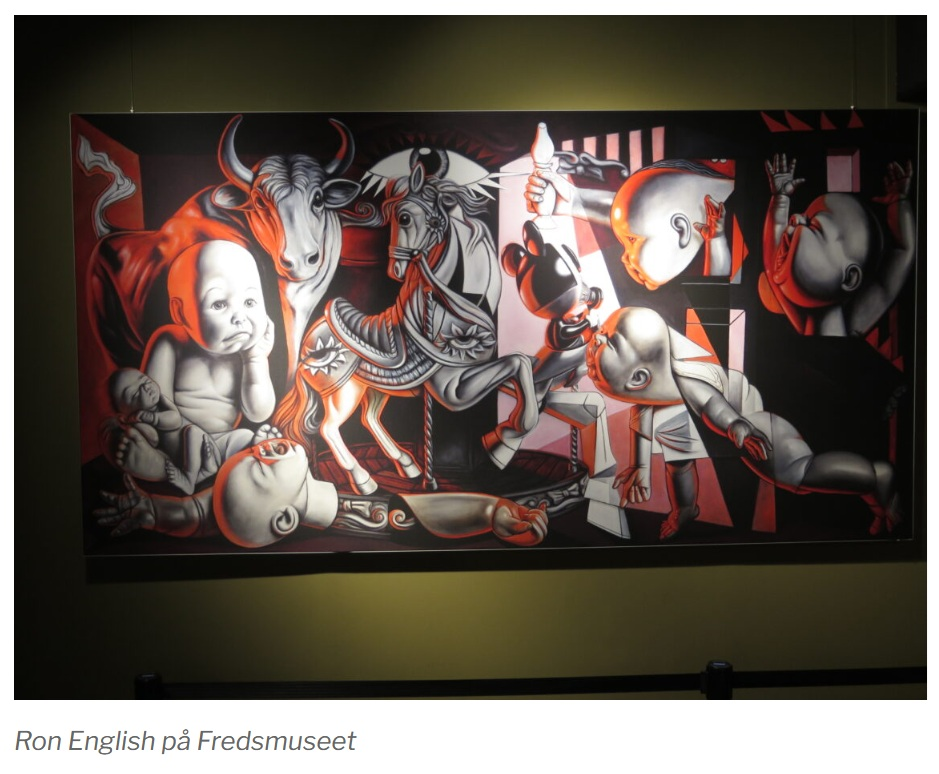
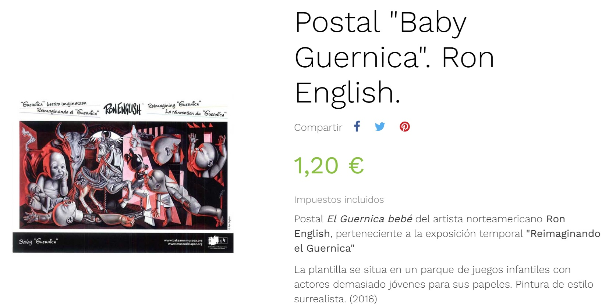

Exhibitions
Ron English / Guernica, Allouche Gallery, New York, New York, US, September 22–October 19, 2016.
Reimagining “Guernica” / La réinvention du “Guernica”, Museo de la Paz de Gernika, Gernika-Lumo, Bizkaia, Spain, April 4–December 10, 2017; the composition was presented as a print on stretched canvas, not as the original painting.

Literature
Allouche Gallery, Ron English: Guernica (New York: Allouche Gallery, 2016), exhibition catalogue PDF, available here, accessed April 5, 2026.
Museo de la Paz de Gernika, Reimagining “Guernica” / La réinvention du “Guernica” (Gernika-Lumo: Museo de la Paz de Gernika, 2017), digital exhibition catalogue / flip-book, available here, accessed April 5, 2026.
Ron English, Original Grin: The Art of Ron English (Paris: Cernunnos, 2019), p. 208. ISBN 978-2374950938.

Notes
The image was later reproduced as a postcard by the Museo de la Paz de Gernika shop in connection with the exhibition Reimagining “Guernica”.
Ancillary Documentation







Selected Online Circulation
Selected sources documenting the work’s exhibition context and wider online circulation.